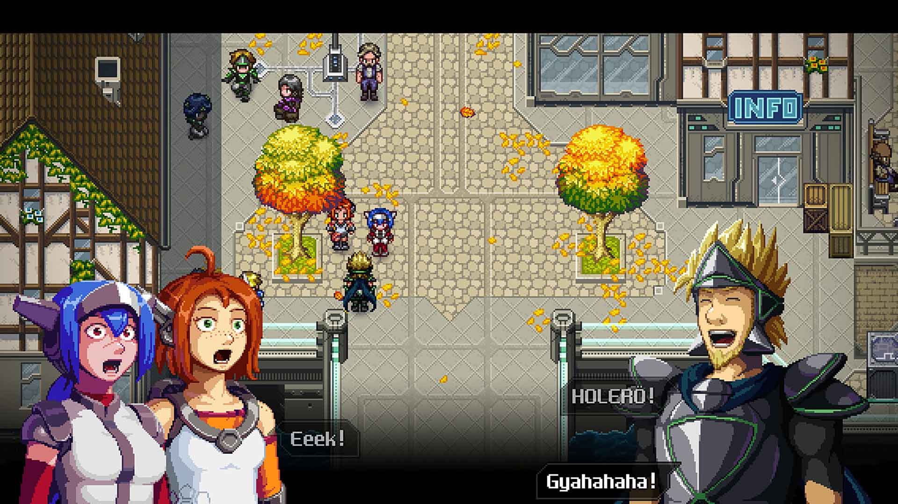
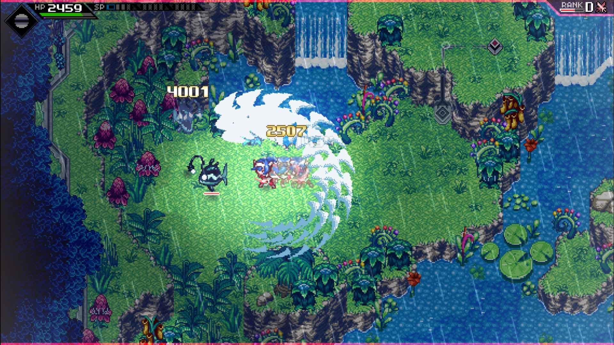
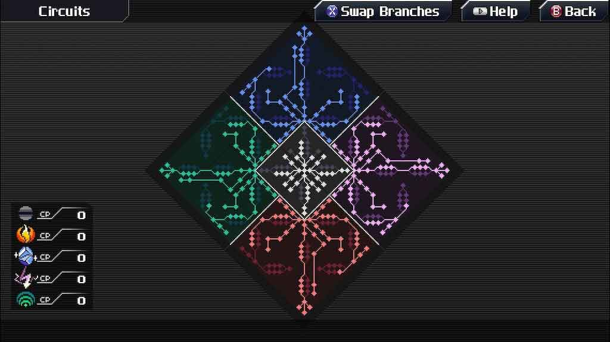
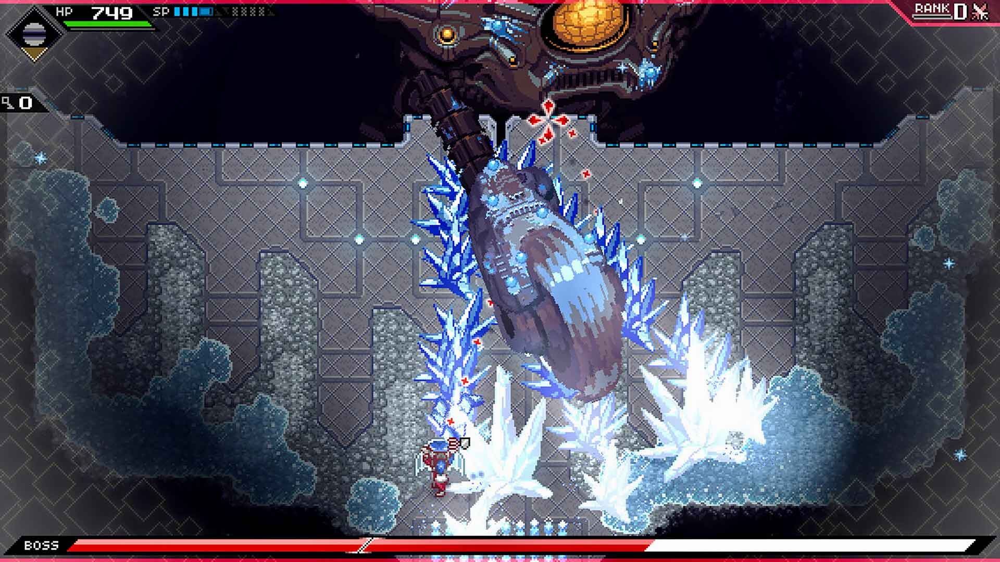
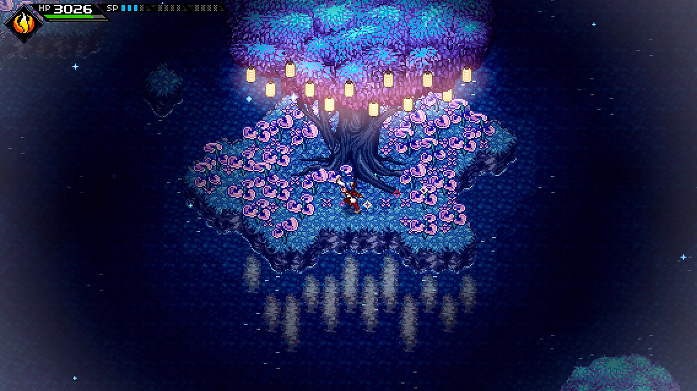
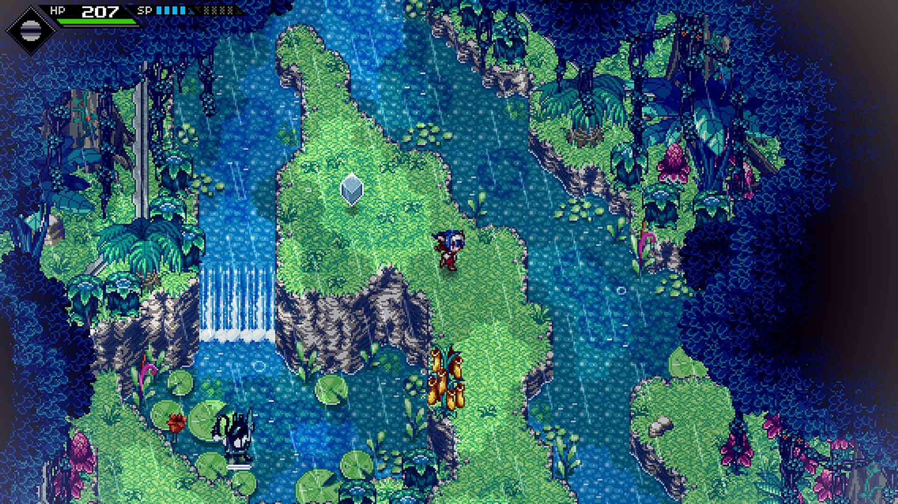

CrossCode
CrossCode is a game within a game. We are Lea, an avatar of a fictional MMORPG named CrossWorlds. In CrossWorlds, players are physically in the game through the use of avatars, controlled by the player's minds. Our character has lost the use of the word and does not remember anything of both real past and the one inside the game. A man named Sergey tries to help by informing us that it is not our first playthrough and that progresssing into the game we will be able to recover the memory.
In our adventure, we'll meet new characters who will join our party and will compose a truly variegated cast. We will get acquainted with characters like Emilie, strong, determined and extremely competitive, Toby, quiet and conciliatory, Apollo, a theatrical champion of justice, and many more, all always well characterized.
The story takes several hours to find a good rhythm. The first hours, in fact, are just a huge tutorial where I found myself overwhelmed with information regarding various aspects of the game: from info on the deep combat system, to how to level up our character, to notions about the world of CrossWorlds. Anyways, after the first few hours, I started to enjoy the storyline a lot more and it motivates me to want to get to the epilogue and to discover the truth about the protagonist's past.
Combat system
The game is an action-RPG with a top-down view. Our class is the Spheromancers one, fighters who alternate melee attacks to ranged attacks by throwing energy-balls. We can set the type of our attacks: we can leave them neutral or assign them one of them four elements (fire, ice, wave and lightning) that we will unlock along our way. We will also have the ability to dodge, to parry with a shield and several special skills.
To progress in the game we will have to master each of these skills, to be quick using them and to be fast in the decisions to take. It will be essential to find the enemies elemental weakness to do more damage, but we will not be able to rely only on to elemental attacks. Their use is subject to overload, we will therefore have to alternate them with attacks neutral. All of this while we will be busy dodging enemy shots and parring with the shield.
All these mechanics combined create a combat system that is always fast and exciting, that finds its apex in the battles against the powerful and challenging bosses. The only aspect that I found slightly negative is the amount of HP some common enemies have and therefore the too long duration of these some clashes, especially in the early stages of the adventure. Anyways, we will be the ones to decide whether to fight common enemies on our path. In fact, we will always find them in a quiet state and they will never attack first.
In the skill tree, called Circuits, we can increase our parameters, get special skills and more through the use of CP (Cross Points), obtained by levelling up. The skill tree is huge: there is in fact one middle section for our neutral form, and a section dedicated to every single element. This gives us the chance to change our statistics and our attacks for each element. Therefore we can customize our character so that she meets our combat style in the best possible way.
Puzzle exploration
The game world is full of environmental puzzles to solve. The most challenging ones are those we'll find inside the dungeons, the areas where we get the elemental powers. They consist of blocks to be moved, locked doors to be opened by keys we have to find, special skills to use to be able to advance and much more. Their difficulty increases with the progress of the adventure and their resolution is pretty satisfying.
These dungeons are one of the aspects of CrossCode that I loved the most. They alternate the puzzle-solving sections to battles with waves of common enemies. At the with each one of them, a powerful boss wait for us. These bosses are definitely the most challenging aspect of the main adventure. They have tons of HP, they hit really hard and require us to learn their move-set to be able to respond quickly. Even the most experienced players will have hard times with them, but they are incredibly satisfying beat.
Secondary missions and game length
I got to the credits in about 35 hours. However, another 35 or more are needed if we wanted to complete all the secondary activities found in the game.
The game from the first hours overwhelms us with secondary missions to be completed. Unfortunately, most are trivial and they simply ask us to kill a certain number of enemies, to find certain objects or to for some NPCs to talk to. Plus, their rewards are almost always negligible, except for some rare cases. Fortunately, there is a teleportation system that is accessible since the start of the game and that is usable at any moment.
In the final stages of the game, we also have access to the arena. Here we will be able to face a series of super challenging fights that will reward us with a special currency. We can spend this currency in some of the best equipment available in the game.
Aspect and Visuals
The game is made in beautiful 16-bit pixel art graphics with top-down view, in the Zelda style from the Super Nintendo era. The environments are all well crafted, varied and colorful, ranging from verdant areas to desert areas, cities and forests. An aspect that I particularly appreciated is the constant presence of NPCs on ours path. Being the game set in a MMORPG we will see fictional players move around the various areas of the game, exploring and carrying out activities. Cities are densely populated with the avatars of fictional players to talk to; they succeed in giving me the impression of being in an actual MMORPG.
There are not many types of common enemies and I think that the game would have benefited from having a handful more. The bosses, on the other hand, are really fantastic. Their designs are various and different from each other, with some with humanoid features, others with the shapes of gigantic machines and many more that I don't want to spoil.
I have played CrossCode on Ps4 fat and it sadly suffered from annoying framerate drops and also stuttering in some areas. An update was already released but it has only slightly improved the issue.
I also run into a couple of serious bugs that made crash the game. In particular I couldn't buy and equip a certain weapon and I was unable to visit a place at a certain time as the game closed suddenly. I reported these issues and I'm sure they will be fixed as soon as possible, but at the moment they are present. Online I have also found people who have encountered similar problems with the Nintendo version Switch.
Final Thoughts
CrossCode is a good game. Its combat system is frenetic and satisfying. This one, combined with the solution of environmental puzzles, are the core mechanics of the game and they are certainly its most successful aspects. The game has also a fairly compelling story, a beautiful soundtrack and a very pleasant graphic style. Unfortunately, I had some framerate drops, some stuttering and a few incredibly annoying crash problems. However I definitely loved it I can easily recommended it to anyone who is looking for a challenging but pleasant game, set in a colorful, well crafted adventurous world.
V-SCORE 8